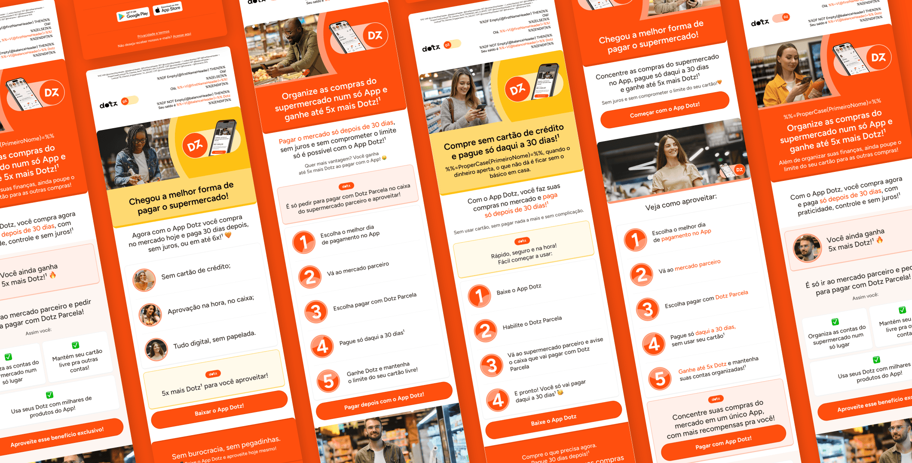
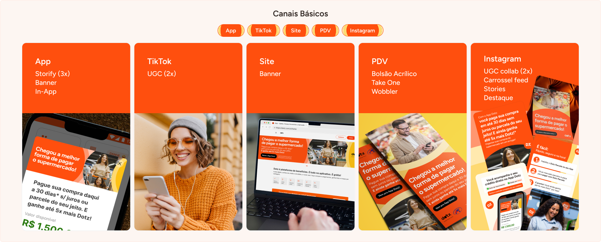
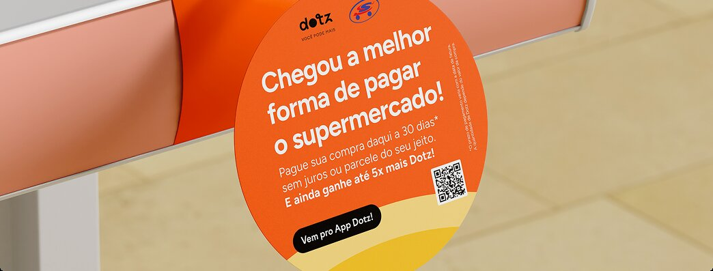
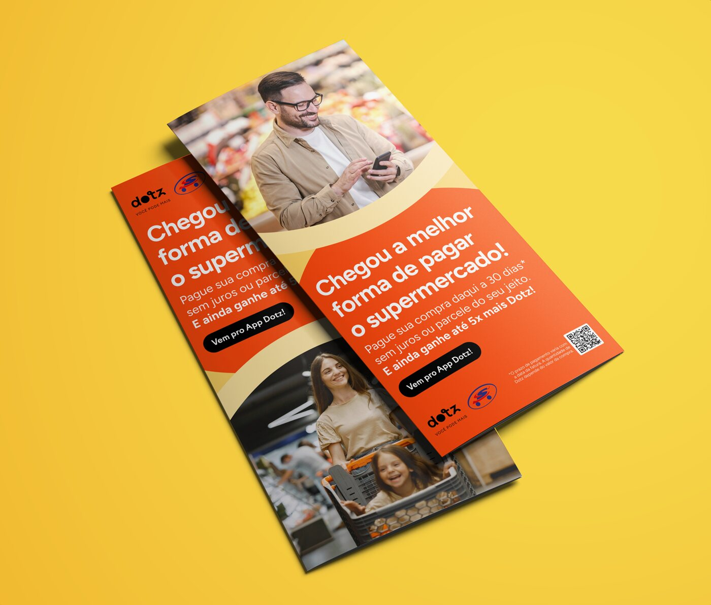
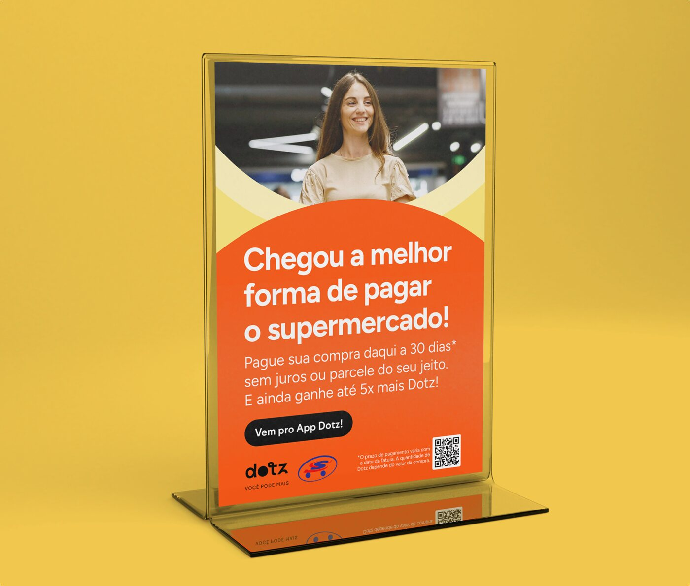
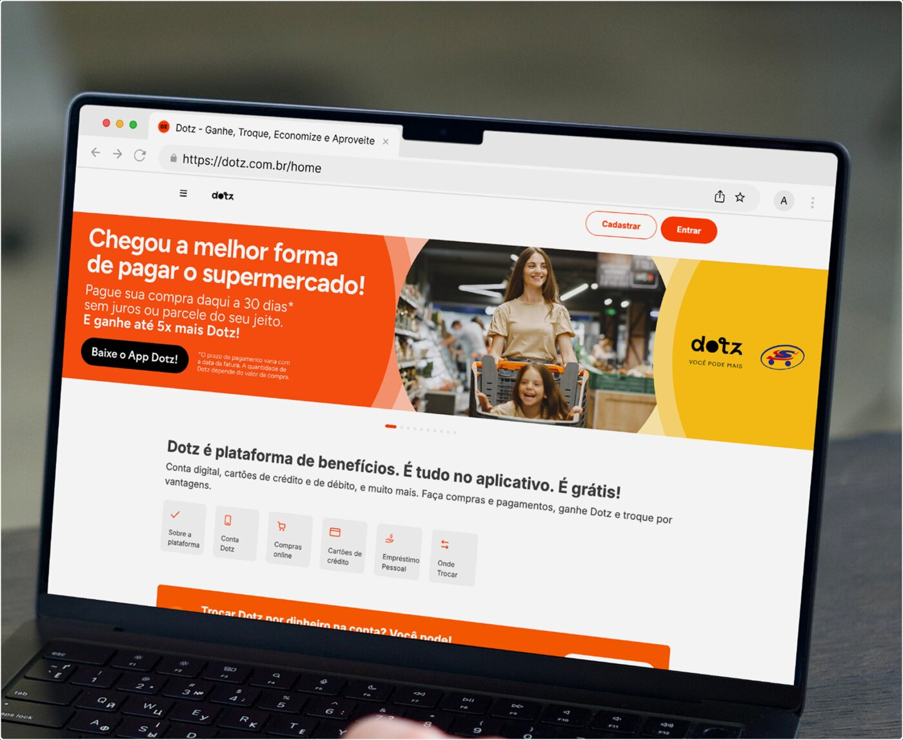

Dotz · 2025

Régua de lançamento: fluxos por perfil e canal
A mesma mensagem não funcionaria para perfis tão diferentes. Por isso, uma mensagem principal nos canais abertos e mensagens específicas onde dava para segmentar.
O lançamento foi pensado como uma jornada, não como peças soltas. Cada canal tinha um papel, e todos levavam para o mesmo lugar: o App Dotz.

Canais de lançamento: App, TikTok, Site, PDV e Instagram
No supermercado, as peças acompanhavam o consumidor do corredor ao caixa. No digital, a comunicação seguia uma sequência, do banner no site ao carrossel de feed, sempre levando para o App. No CRM, a régua segmentada mandava mensagens diferentes para cada perfil.
No supermercado, o consumidor tem segundos. As peças usam alto contraste, hierarquia clara e um único CTA: baixar o App Dotz.

Wobbler: material de gôndola para alta visibilidade no corredor

Take One: material no ponto de pagamento

Bolsão acrílico: display de caixa no momento de decisão
No digital, a comunicação seguia uma narrativa sequencial, do banner no site aos stories, sempre levando para o App.

Banner no site dotz.com.br: ponto de entrada digital
Stories no Instagram